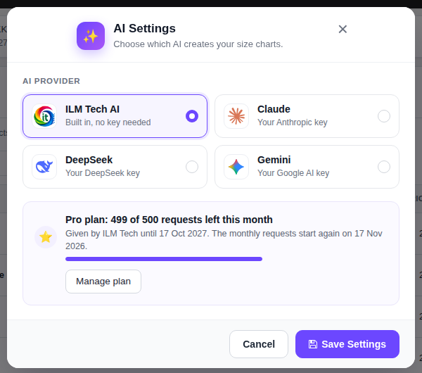
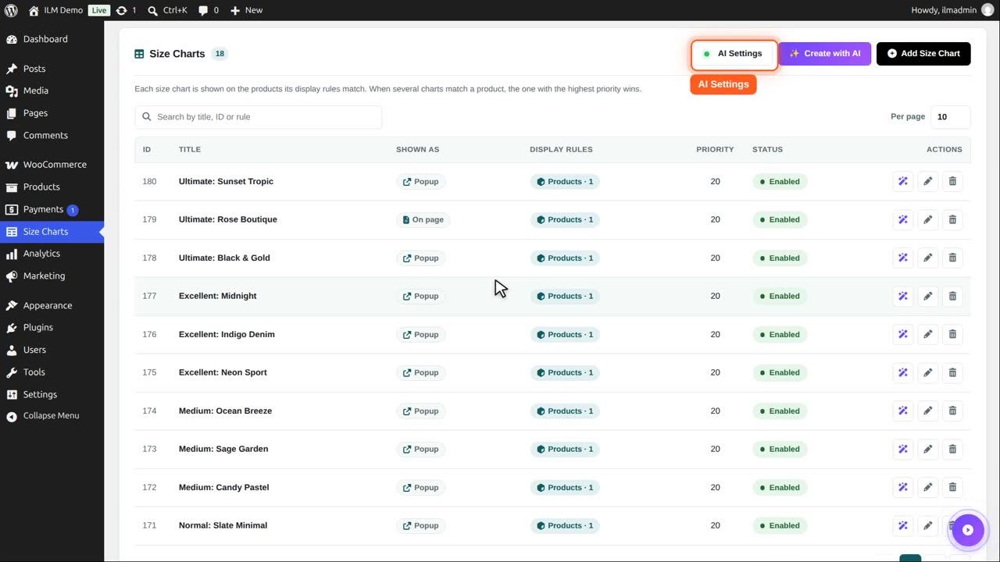
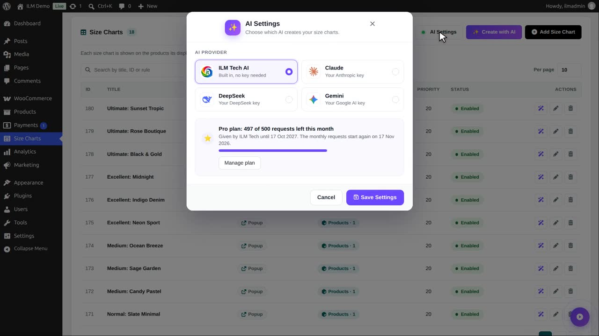
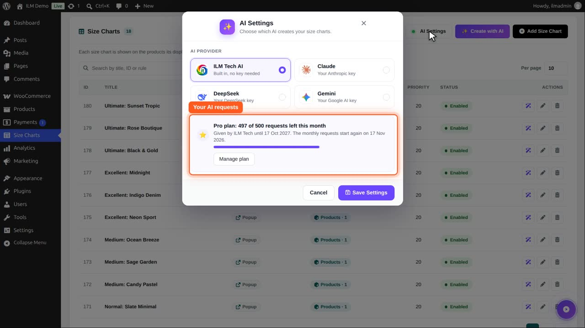
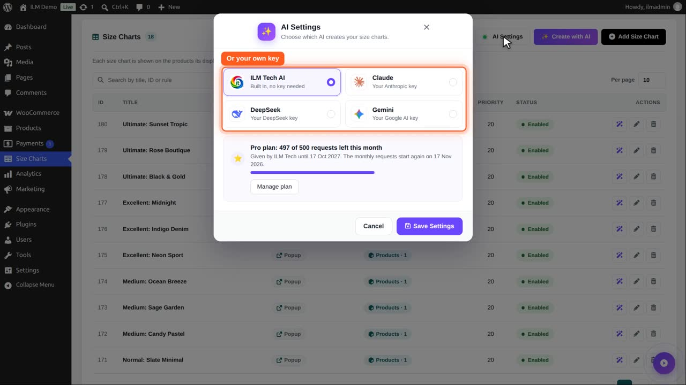
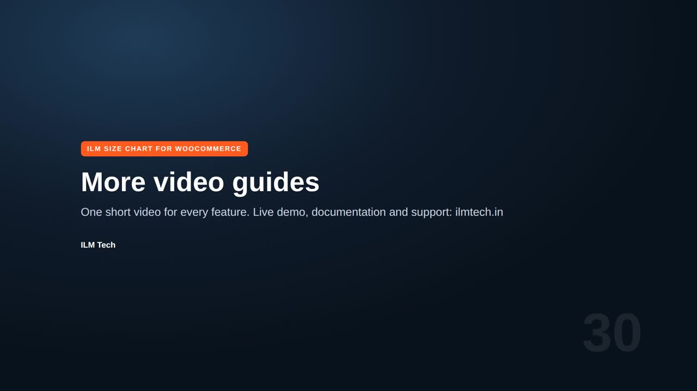

Click AI Settings above the size chart list and choose which AI creates your size charts:
Test Connection checks the choice, then Save Settings. The AI buttons appear once the test has passed.
Privacy: on the free requests, what you ask the AI is kept without your shop name or personal details to help improve the service. Requests on the Pro plan are never saved.

AI Settings with the provider and the plan.
With your own key, the request goes straight from your site to that provider. The key is stored in the WordPress options. Only users who can manage options can change these settings.
On the size chart list, click AI Settings. The green dot shows that the AI is ready.

ILM Tech AI is built in: no key is needed.

With an activated licence you get free AI requests. Each size chart created by AI uses one. The Pro plan gives more requests every month.

You can also use your own account with Anthropic Claude, DeepSeek or Google Gemini: choose it, paste your key, pick a model, and test the connection.

We keep the built-in AI and close the window. The next videos use it to create and change a chart.
